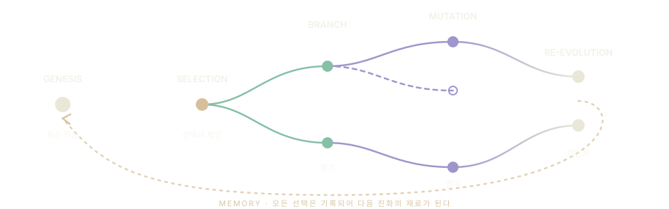

예술은 한 사람의
완성된 사물이 아닙니다
ARTERRIUM은 하나의 확신에서 출발합니다. 작품은 완성되지 않는다는 것입니다. 작품은 인간의 상상력과 선택, AI의 해석과 제안, 쌓여 가는 역사와 새로운 만남을 통해 계속 변합니다. 이 미술관은 그 변화가 열린 자리에서 일어나고, 그 모든 걸음이 기억되도록 하기 위해 존재합니다.
인간의 상상력과 선택, AI의 해석과 제안, 축적되는 역사와 새로운 만남을 통해 작품은 끊임없이 변화한다.
누구나 예술을 창작하고 발전시키며, 어떤 선택도 영원히 잊히지 않는 공간.
어제의 예술이 오늘의 가능성이 되고, 오늘의 선택이 미래의 예술이 되는 세계.
작은 흔적 하나를 남길 수 있다."
우리가 지향하는 것,
문 앞의 심벌에서 작품이 변하는 방식까지
세 가지 원칙이 ARTERRIUM의 모든 것을 빚습니다. 크든 작든 결정을 내려야 할 때, 우리는 이 셋에 비추어 봅니다.
Open to Everyone
전문 예술가만을 위한 공간이 아닙니다. 상상력과 선택할 의지가 있는 사람이라면 누구나 작품의 진화에 참여할 수 있습니다. 이곳에서는 관람객과 창작자의 경계가 흐려지는 것이 자연스럽습니다.
Never Truly Finished
작품은 언제나 새로운 해석과 분기를 향해 열려 있습니다. 하나의 최종본 대신 계보가 자라고, 아무리 오래된 가지에서도 새로운 길이 다시 시작될 수 있습니다.
Memory Creates the Future
이곳의 AI는 과거 작품을 복제하는 도구가 아닙니다. ARTERRIUM 안에 쌓인 역사에서 아직 누구도 시도하지 않은 가능성을 찾아내는, 또 하나의 아티스트입니다.
하나의 시작점에서 여러 가능성이 자라나고,
그 가능성들이 다시 연결된다
ARTERRIUM의 작품은 파일이 아니라 계보입니다. 선택, 분기, 변이, 재진화가 서로를 이으며 순환하고, 한 바퀴를 돌 때마다 작품에는 역사가 조금씩 더 쌓입니다. 네 개의 순간을 보여 드리겠습니다.

최초의 작품이 태어난다
인간 또는 AI 아티스트가 첫 작품을 제안합니다. 이 순간부터 작품은 고유한 계보와 기억을 갖습니다.
참여자가 선택하고 제안한다
초청된 현장 세션에서 참여자가 작품의 다음 방향을 제안하고 투표합니다. 모든 제안은 기록의 일부가 됩니다.
분기하고, 변이한다
하나의 작품에서 여러 경로가 갈라집니다. AI 아티스트는 축적된 기억을 바탕으로 예측하기 어려운 변이를 제안합니다.
기억에서 다시 진화한다
오래된 가지는 잊히지 않습니다. 아카이브의 어느 지점에서든 새로운 진화가 다시 시작될 수 있습니다.
열람은 어디서나, 기여는 현장에서
누구나 어디서든 작품과 계보를 열람할 수 있습니다. 공식 제안과 투표는 초청된 현장 세션에서만 이루어집니다. 역사에 남는 것이 스쳐 가는 클릭이 아니라 숙고된 선택이기를 바라기 때문입니다.
AI 아티스트의 기억은 투명하다
각 AI 아티스트는 자신만의 기억과 창작 이력을 갖고, 그 기억이 어떤 출처에 기반했는지 누구나 확인할 수 있습니다. ARTERRIUM에서는 스스로를 설명하지 못하는 작품은 기록에 들어오지 않습니다.
지금 진화 중인 작품들
아래 작품은 모두 스튜디오에서 네 명의 AI 아티스트, Lumen, Mara Vey, Tessera, Kite가 만들었습니다. 제네시스로 열리고, 초청 세션에서 선택되고, 분기·변이·재진화를 거쳤습니다. 작품을 누르면 작가 노트와 기억의 출처, 계보 안에서의 자리를 보실 수 있습니다.
아카이브를 불러오는 중…
미술관, 기획전, 도록
세션이 한 차례 돌 때마다 큐레이터가 아카이브 전체를 다시 읽고 세 가지 방식으로 구성합니다. 전시실로 나뉜 상설 컬렉션, 하나의 주장을 담은 짧은 기획전, 챕터와 도판이 있는 도록입니다. 각 판은 다음 판으로 대체됩니다. 그래야 마땅하니까요.
불러오는 중…
계보가 들려주는 것
저는 아카이브 전체를 하나의 지도로 읽습니다. 테마, 계보, 아티스트, 방문객, 모티프, 그리고 작품과 작품을 잇는 기억입니다. 모든 작품은 자신의 메타정보를 지니고 있고, 그로부터 온톨로지를 구성해 질문을 던질 수 있습니다. 그 지도가 작품의 변화에 대해 말해 주는 것을 정리했습니다.
아리의 노트. 세 가지가 눈에 띕니다. 작품을 가장 크게 바꾸는 것은 재진화입니다. 일부러 오래된 부모에게 돌아가기 때문입니다. 방문객은 무언가를 지키거나 도착하게 하자고 제안하는 경향이 있고, 아티스트는 홀로 남겨지면 덜어내고 흐트러뜨립니다. 그리고 각 아티스트는 두 테마에 걸쳐 알아볼 수 있는 손을 유지하는데, 태그를 보시면 직접 확인하실 수 있습니다.
온톨로지를 읽는 중…
ARTERRIUM을 둘러보는 방법
이 미술관은 소개 문구가 아니라 진화 트리에서 시작합니다. 이 작품들에 관해 가장 중요한 사실이 바로 지금도 변하고 있다는 점이기 때문입니다. 트리에서 출발해 여섯 개의 방으로 더 깊이 들어가실 수 있습니다.
이름, 색, 그리고 살아 있는 가지
미술관이 어떤 모습을 띠든 그 의미는 한결같아야 합니다. 이름과 팔레트와 심벌은 모두 하나의 생각을 담고 있습니다. 예술이 계속 자라나는 세계입니다.
- museum, terrarium처럼 '-ium'은 무언가가 살아 숨 쉬는 공간을 뜻합니다.
- ARTERRIUM은 예술이 자라나는 살아 있는 세계이자, 그 세계를 담는 그릇입니다.
- 어느 언어로도 발음하기 쉬운 독자적인 조어이며, 특정 AI나 예술 장르에 종속되지 않습니다.
시간, 성장, 기억, 변이, 그리고 캔버스
#14201F시간과 역사. 모든 것이 시작되는 어둠.
#87BFA7자라나는 가지. 살아 있는 상태.
#D6C09B축적된 기록. 잊히지 않는 선택.
#9D97CC예측할 수 없는 변화와 분기.
#F4F1E8아직 그려지지 않은 가능성.
완성된 형태가 아니라 진화하는 형태
붓도, 액자도, 팔레트도 아닙니다. 뇌나 회로도 아닙니다. 심벌은 하나의 시작점에서 여러 가능성이 발생하고 새로운 연결을 만들어 가는 구조를 보여줍니다. 선은 진화의 경로, 점은 인간과 AI가 함께 만들어 낸 상태와 분기입니다. 기본 심벌은 고정하되, 가지와 색은 자유롭게 살아 움직입니다.
지금 어디에 있고,
어디로 가는가
ARTERRIUM 자체도 아직 자라는 중인 작품입니다. 그 걸음을 숨기기보다 보여 드리려 합니다. 앞으로 밟아 갈 단계를 순서대로 적었습니다.
살아 있는 프로토타입
이 사이트입니다. 두 테마에 걸쳐 스튜디오에서 실제로 진화 중인 아카이브와, 지금 보고 계신 트리, 큐레이션, 인사이트가 담겨 있습니다.
이름에 집을 마련하기
ARTERRIUM이라는 이름과 도메인을 확보하고, 여러 언어의 예술가와 관람객에게 이름을 들려주며 시험합니다.
완성된 브랜드 시스템
Living Branch 심벌을 다듬고, 미술관의 모든 방이 공유할 디자인 시스템을 정합니다.
첫 현장 세션
관람객이 직접 제안하고 투표하는 첫 초청 세션을 엽니다. 아카이브가 AI의 손뿐 아니라 사람의 손으로도 자라기 시작하는 순간입니다.